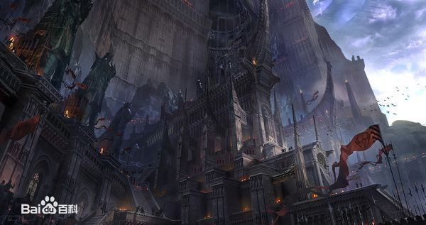
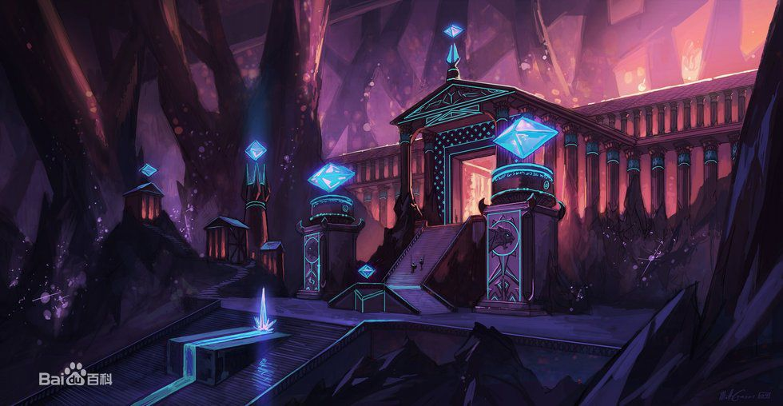

《英雄联盟》(简称LOL)是由美国拳头游戏(Riot Games)开发、中国大陆地区腾讯游戏代理运营的英雄对战MOBA竞技网游。 游戏里拥有数百个个性英雄，并拥有排位系统、天赋系统、符文系统等特色养成系统。 《英雄联盟》还致力于推动全球电子竞技的发展，除了联动各赛区发展职业联赛、打造电竞体系之外，每年还会举办“季中冠军赛”“全球总决赛”“All Star全明星赛”三大世界级赛事，获得了亿万玩家的喜爱，形成了自己独有的电子竞技文化。
在符文之地，魔法就是一切。 在这里，魔法不只是一种神秘莫测的能量概念。它 是实体化的物质，可以被引导、成形、塑造和操作。符文之地的魔法拥有自己的自然法则。源生态魔法随机变化的结果改变了科学法则。 符文之地有数块大陆，不过所有的生命都集中在最大魔法大陆——瓦罗兰。瓦罗兰大陆居于符文之地中心，是符文之地面积最大的大陆。 被祝福的符文之地上有大量源生态魔法能量，而此地居民可以触及其中的能量。符文之地的中心区域集中了数量巨大的源生态魔法能量，这些地方都是水晶枢纽的理想位置。水晶枢纽可以将源生能量塑形为自身实体化的存在。此外，水晶枢纽还可以成为能量车间，为需要魔法能量的建筑供能。水晶枢纽遍布符文之地，但最大的水晶枢纽都坐落在瓦罗兰大陆。
艾欧尼亚位于瓦罗兰大陆之外，诺克萨斯东北。虽然该国的主要人口组成是人类，但部分约德尔人和其他世界性种族也将这里视为家园。艾欧尼亚有许多宗教中心和学校。艾欧尼亚法院是全瓦罗兰公认的公平和中立的典范。所以艾欧尼亚审判官是除了英雄联盟审判者之外最受青睐的职位。 艾欧尼亚长期以来一直申明对瓦罗兰的政治事务保持中立，不过这一姿态并不能让艾欧尼亚远离大陆的纷争。人类强权城邦诺克萨斯已经将征服目标转向了艾欧尼亚。在英雄联盟有能力全面影响瓦洛兰的政治事务之前，诺克萨斯已经发动了旨在征服艾欧尼亚的一系列战役。艾欧尼亚成功挡住了诺克萨斯最高指挥部的攻击。事实上，诺克萨斯和艾欧尼亚之间胶着的战事，以及诺克萨斯试图将战争升级的后续举动是联盟成立的主要诱因之一。
战争学院是英雄联盟裁决瓦罗兰政治纠纷之地。这里是绝 对中立的领土，严禁任何纷争。违反者将面对学院的士兵和魔法。学院坐落于一座巨型水晶枢纽之上，由黑曜石、贵金属和魔法塑形而成。它位于莫格罗恩关隘的北方入口，刚好位于相互敌对的城邦德玛西亚和诺克萨斯之间。 除了作为英雄联盟所在地，战争学院还是瓦罗兰最权威的军事培训机构。很多图书馆都致力于收录战争学院的英雄信息，并向所有研究者开放。 战争学院内部是马约里斯秘术中心，部分是魔法学校，部分是法术储藏地，还有一部分是雇佣经纪处。马约里斯秘术中心是召唤师们交易游戏金币的中心，无论新手还是大师都可以在这里花费自己从正义之地挣得的金币，换取他们感兴趣的物件。召唤师可以在此消耗金币，换取召唤新保卫者化身的能力。。